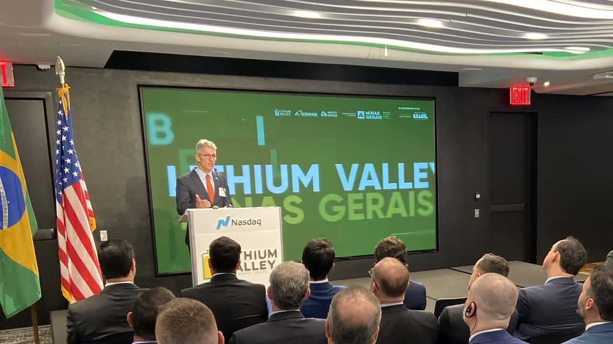
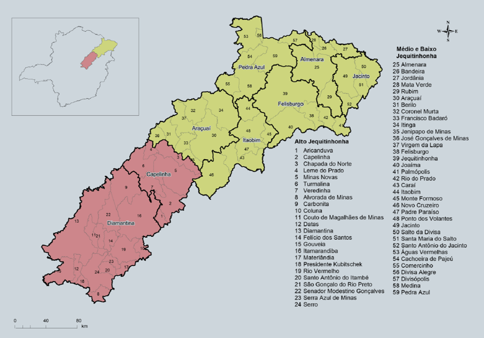

Bruno Lopes, Marcos Vinícius, Rafael Cruz - AI-APW-01
O vale do lítio é uma iniciativa que busca a extração do mineral lítio de forma sustentável em colaboração com a sociedade, ajudando no desenvolvimento das cidades do vale do Jequitinhonha e do governo de Minas Gerais (Romeu Zema - 2023).

Foto: André Cruz / Imprensa MG / Startups
O Projeto “Vale do Lítio” (Lithium Valley Brazil) foi lançado no dia 09/05/2023, em Nova Iorque, com um intuito de desenvolvimento econômico-social, gerando um maior índice de empregabilidade das 14 cidades das regiões nordeste e norte de Minas Gerais envolvidas. Esse projeto abrange grande parte do vale do Jequitinhonha, beneficiando as cidades de Araçuaí, Capelinha, Coronel Murta, Itaobim, Itinga, Malacacheta, Medina, Minas Novas, Pedra Azul, Virgem da Lapa, Teófilo Otoni e Turmalina, no Nordeste de Minas, Rubelita e Salinas, no norte mineiro.

Foto: Reprodução/Plano de Desenvolvimento para o Vale do Jequitinhonha – Fundação João Pinheiro
Essas regiões abrigam a maior a maior reserva nacional de lítio, mineral muito usado na produção de baterias de longa duração. Segundo o governador Zema, o lançamento do projeto tem também o intuito de mostrar para o mundo o potencial de produção de metal estratégico: “Queremos que o Vale do Jequitinhonha se transforme no vale da tecnologia para a produção de baterias e demais produtos de valor agregado”, explicou.
O diretor-presidente da Invest Minas, João Paulo Braga, completou a frase do governador Zema, reforçando a alta capacidade de Minas Gerais de se tornar uma referência mundial de fabricação e desenvolvimento de tecnologias: “Estamos prontos para auxiliar os investidores com todas as informações disponíveis para que tragam seus projetos para Minas Gerais e aproveitem essa oportunidade de negócio”, completou sua fala.